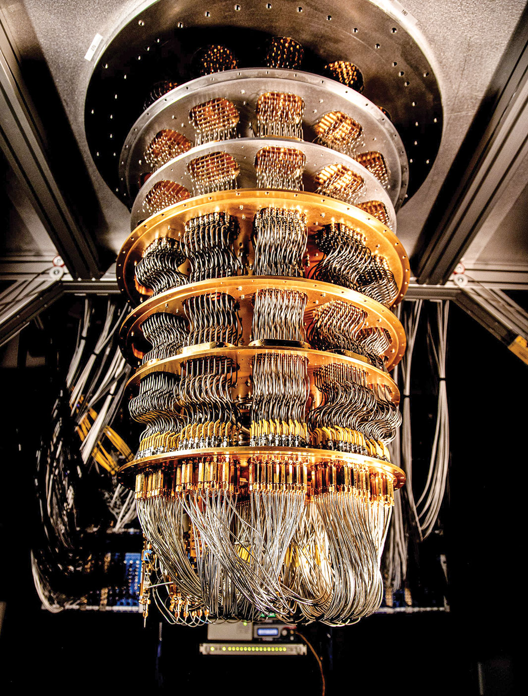

This course will give an introduction to the principles of Quantum Computing. We will have an overview of the concept of qubits and quantum gates and we will study some of the mathematical tools to reason about them.
We will learn the four fundamental principles of quantum mechanics: superposition, entanglement, measurement, interference. We will study non-locality, quantum teleportation, and and some important quantum algorithms.
In the exercise sessions we will learn to use the IBM Quantum Composer to design circuits and run them on an actual quantum processor.
References
Bob Sutor, Dancing with Qubits
The IBM Quantum Composer
In this section you will find, after each lecture, a list of topics that were taught and references to the chapters of the textbook.
| Date | Topics | Lecture Material |
|---|---|---|
| 1. Mon 7 Apr 2025 | Introduction to Quantum Computing Basics of QC: qubits and gates Four Principles of Quantum Mechanics: Superposition, Measurement, Entanglement, Interference |
Lecture 1 |
| 1E. Mon 7 Apr 2025 | Exercise Class 1 | TBA |
| 2. Tue 8 Apr 2025 | Bra-Ket representation Math basics: complex numbers, vectors, matrices Gates and Unitary Matrices Measurements and Hermitian Matrices |
TBA |
| 2E. Tue 8 Apr 2025 | Exercise Class 2 | TBA |
| 3. Wed 9 Apr 2025 | Spin Operators and Pauli Gates Bell States and Non-Locality Quantum teleportation |
TBA |
| 3E. Wed 9 Apr 2025 | Exercise Class 3 | TBA |
| 4. Thu 10 Apr 2025 | Quantum circuits/algorithms The Bernstein-Varizani Algorithm |
TBA |
| 4E. Thu 10 Apr 2025 | Exercise Class 4 | TBA |
| 5. Fri 11 Apr 2025 | Grover's Search Algorithm Shor's Algorithm |
TBA |